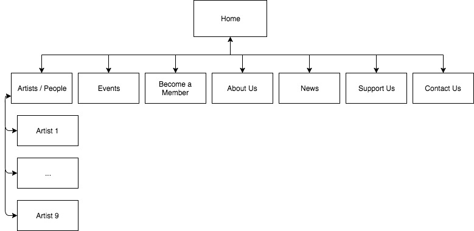

Group members:
The website main goal is to raise the concert attendance and possibly attract a larger number of sponsors. This is because the orchestra relies on outside sponsors for income since membership to the organisation and the only revenue source is from ticket sales. Therefore, the larger the audience turnout, the larger the revenue gained from said concert will be.
The success of the website will be assessed through comparing audience figures before the website launches and after the website launches. This could be done by counting attendance from previous concerts over the past 6 months to a year and composing an average. A figure will then be gathered for the same period after the website launches. These two averages can then be compared to assess whether the website achieved its goal of increasing concert attendance.
The audience that currently attend concerts are adults of 40 years or over, the client wishes to attract a younger audience of teenagers and young adults. To accomplish this the website will need to adopts a scannable design with reduced text but with the same message being delivered (Simplified design). The website will also need to integrate multimedia elements to make it more interactive and maintain the interest of these users. Another main element that will need to be present for this audience is also multi-device compatibility, since a large portion of this audience views website through their smart phones instead of through actual computer monitors. This could be addressed with multiple website structures that change depending on the device used or having the main design being centred around mobile devices (Single column layout, big buttons, etc)
Home
